Research Computing in Python
#1 Fundamentals — a short history of computing, and a why, what and how of Python
2026-07-17
Computing and Me
- Dr Matthew Evans (https://ml-evs.science, https://github.com/ml-evs)
- Research Fellow in the Grey Group, Department of Chemistry
- Background in computational physics & materials science
- Running hundreds of thousands of HPC jobs simulating materials with DFT
- Now writes open source data managemement software (datalab) for materials and chemistry
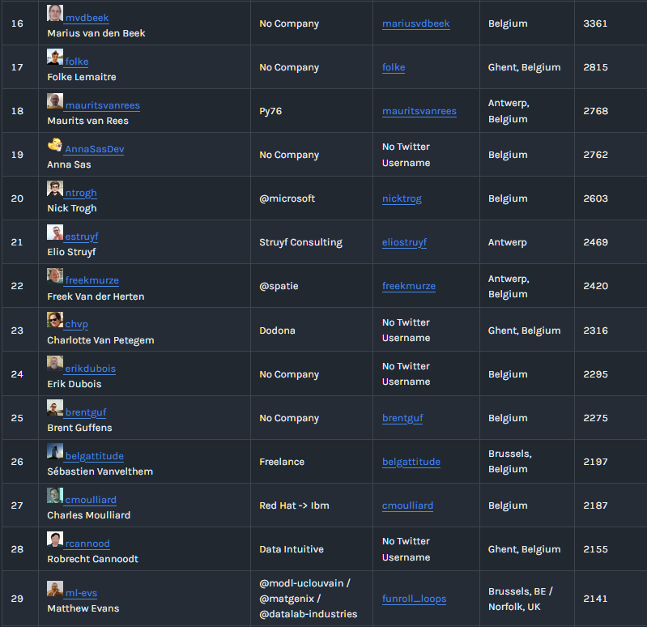
Peak: #29 GitHub user in Belgium
This course
- A biased take on what you need to get started using computers in research
- Not a computer science course, not exhaustive
- A mixture of high-level concepts, empirical truths and practical advice
- Not a real Python course, either - you can’t learn a language by reading the dictionary
This lecture: Fundamentals
- Some computing history
- Some computing architecture
- Programming languages
- Data structures
- Python
- Why Python is slow — and why we use it anyway
- A demo: the Mandelbrot set
- Wrap-up and motivation for next week
A brief history of computing
A brief history of computing
Images: Wikimedia Commons — Antikythera (CC BY-SA 3.0), Difference Engine (public domain)
.webp){kind=link}

Douglas Hartree and his differential analyser
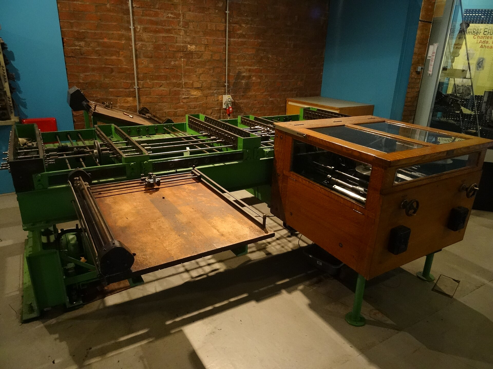
Meccano differential analyser for computing atomic spectra
\(1\,E_\mathrm{h} = \dfrac{\hbar^2}{m_\mathrm{e} a_0^2} = \dfrac{e^2}{4\pi\varepsilon_0 a_0} \approx 27.2\ \mathrm{eV}\)
Images: differential analyser (Sylvain Machefert, CC BY-SA 4.0); portrait (fair use)


“The implications of the machine are so vast that we cannot conceive how they will affect our civilisation. Here you have something which is making one field of human activity 1,000 times faster. In the field of transportation, the equivalent to ACE would be the ability to travel from London to Cambridge … in five seconds as a regular thing. It is almost unimaginable.”
— Douglas Hartree, on the Automatic Computing Engine, 1946
…and yet, all the calculations that would ever be needed in this country could be done on three digital computers: one in Cambridge, one in Teddington, and one in Manchester.
— Hartree in 1951, as recalled by Lord Bowden
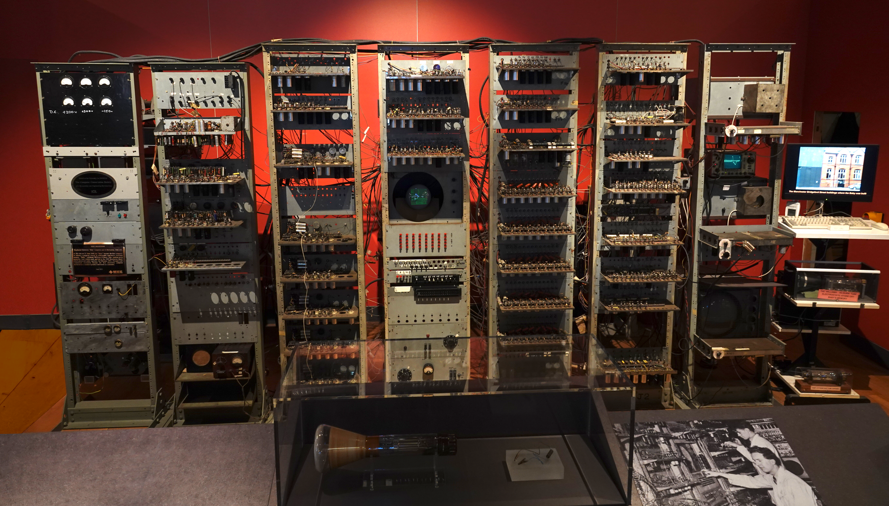
The Manchester “Baby” (1948)
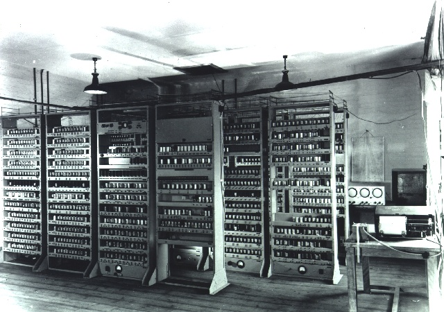
EDSAC, Cambridge (1949)
Images: Manchester Baby replica (Logg Tandy, CC BY 4.0); EDSAC (University of Cambridge Computer Laboratory, CC BY 2.0)

.jpg){kind=link}
The first stored-program computers - the birth of software?
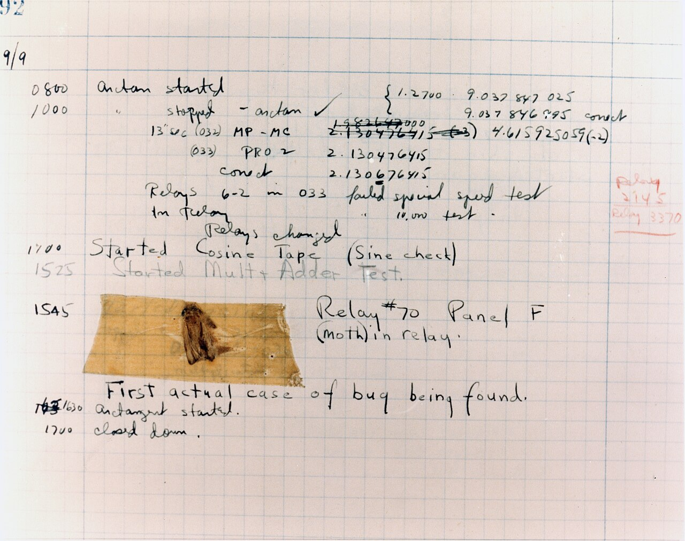
The first actual computer bug (Harvard Mark II, 1947)
Image: Wikimedia Commons (public domain, US Navy)

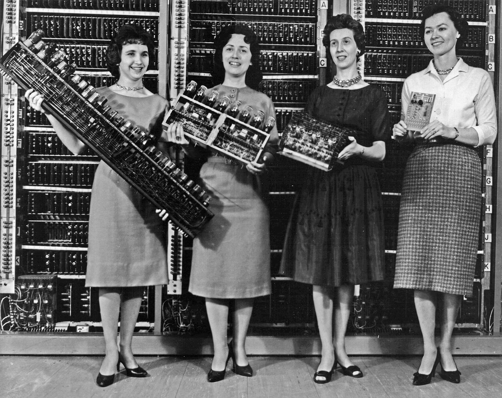
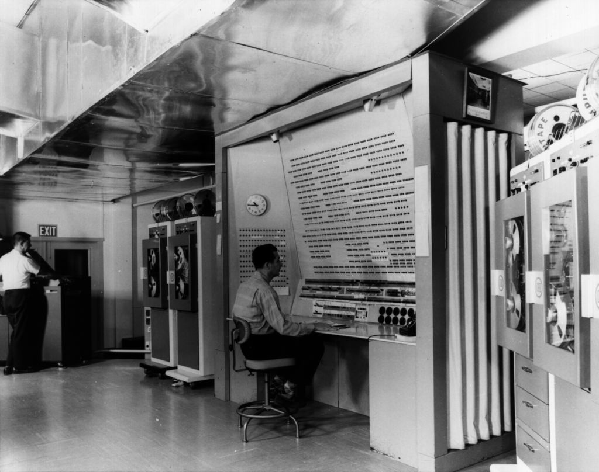
BRLESC-I in full
Images: Wikimedia Commons — Army computers, BRLESC-I (both public domain, US Army)


A brief history of computing
In the meantime… hard disks, programming languages, operating systems, parallel computers, graphics, personal computers, networking, the Internet, the World Wide Web
Images: Wikimedia Commons — first transistor (public domain), Intel 4004 (Thomas Nguyen, CC BY-SA 4.0), Apple M1 (CC0)


What have computers been used for?
- First, science — tables, trajectories, atomic structure: machines built by and for researchers
- Then, the military: ballistics, cryptography, bomb guidance
- Then, commerce: payroll, banking, inventory
- Then, suddenly, everyone: PC revolution + the internet/web democratised computing: communication, creativity, everyday life
- Yet the frontier is still pushed by science and nowadays by AI
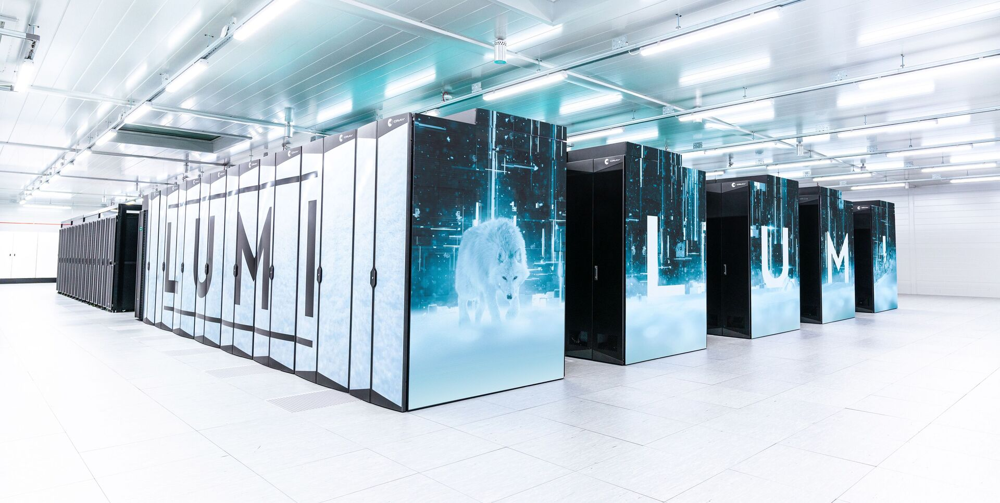
LUMI, Kajaani, Finland (2022)
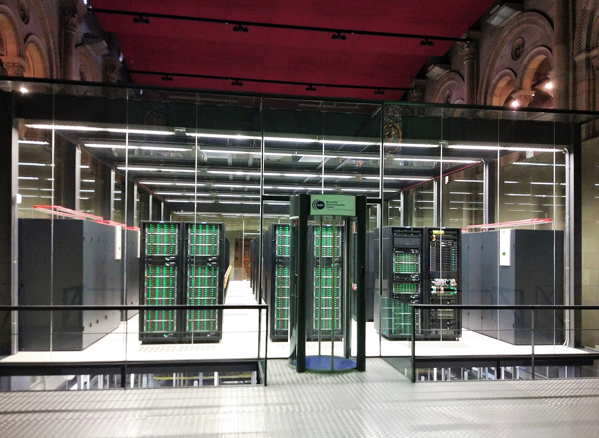
MareNostrum 4, Barcelona (2017)
Images: LUMI (LUMI consortium / Fade Creative); MareNostrum 4 (Gemmaribasmaspoch, CC BY-SA 4.0)

Software in research today
- Simulations: molecular dynamics, quantum chemistry and materials science, climate, weather, astrophysics, complex systems
- Automation: instrument control, robotics, high-throughput experiments, laboratory information management systems
- Data analysis: large-scale experiments, imaging, plotting
- Statistical & probabilistic modelling: fitting and inference, uncertainty quantification, Monte Carlo and Bayesian methods
- Data management: provenance, reproducibility, FAIR principles
- Machine learning: image recognition, natural language processing, generative models
- Dissemination: publishing, visualisation, outreach, citizen science
Computing architecture
What is the machine actually doing?
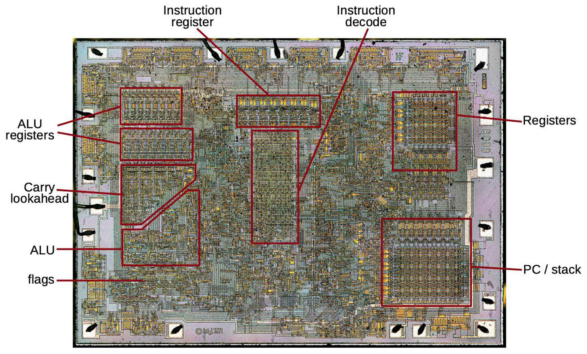
Intel 8008 (1972), die labelled
- The CPU receives instructions as “machine code”, human-readable as assembly
- decodes each one
- and executes it, shuttling values between the registers (right) and the arithmetic/logic unit (left)
- All chip design since revolves around efficiently cramming as much compute as possible into this layout: specialised registers, specialised instructions…
- …and keeping it fed: modern CPUs pipeline instructions, perform branch prediction execute speculatively and out of order, and hide slow memory behind layers of caches
Image: Ken Shirriff, righto.com — used with attribution
Instruction sets: x86 and ARM
- x86: the Intel 8086 (1978) instruction set — descendant of the 8008, still running nearly every “Intel or AMD” machine
- amd64 / x86-64: its 64-bit extension — designed by AMD (2003), adopted by Intel, extended to include vectorisation to make the most of wider registers (SSE, AVX)
- ARM (Acorn Computers, Cambridge, 1985): the only real competitor — every phone, Apple M-series, now Windows laptops
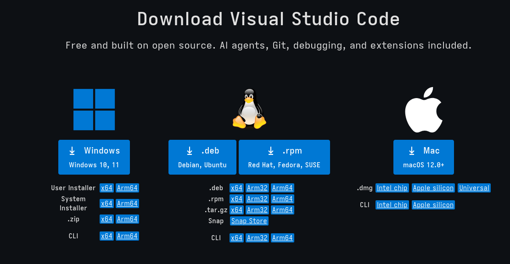
Programming
Programming languages
Programming languages are the “simple”, human-facing interface to all this machinery.
What you write (C):
Low-level vs high-level languages
- The “level” of a language ≈ its distance from the machine
- C (1972): low-level — you manage the memory, and the compiler maps your code almost 1:1 onto the hardware
- Fortran (1957): the original high-level language — “FORmula TRANslation”, built for science; compiled and fast, with arrays as first-class citizens
- Python (1991): very high level — no types to declare, memory managed for you, everything decided at runtime… which is exactly why it’s slow
/* the max of some numbers, in C */
double *xs = malloc(5 * sizeof(double));
if (xs == NULL) /* did we even get the memory? */
exit(1);
xs[0] = 1.0; xs[1] = 4.5; xs[2] = 2.0;
xs[3] = 8.1; xs[4] = 3.0;
double largest = xs[0];
for (int i = 1; i < 5; i++)
if (xs[i] > largest)
largest = xs[i];
free(xs); /* give it back, or leak it */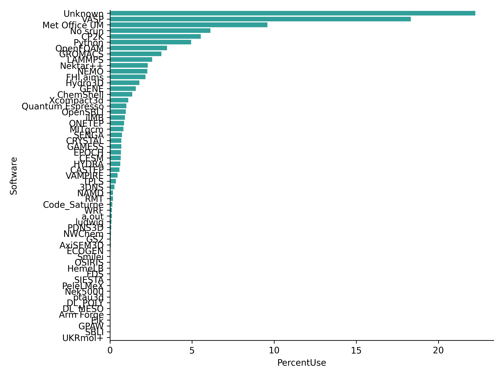
Software usage on ARCHER2, the UK national supercomputer (June 2026)
Data: ARCHER2 usage data, EPCC
A programming language is a contract
- The language is abstract: syntax and rules of meaning, written down in a standard, e.g., the C and Fortran standards, the Python language reference. No machine is mentioned
- The implementation honours that contract on a particular machine:
gcc/clangfor C,gfortran/flangfor Fortran, CPython/PyPy for Python - The
mean()you just saw compiles to different assembly on ARM but the C doesn’t change. That’s what portable means: write to the contract, not to the machine
Everything is an abstraction
your analysis script
Python
NumPy / compiled libraries
compiler ・ OS
assembly ・ x86, ARM
CPU ・ gates ・ transistors
electrons- Computing is a tower of abstractions — nobody holds it all in their head at once
- The working rule: know enough to reason one layer down, and to design for the layer above
- But abstractions leak — the Law of Leaky Abstractions: the layer below pokes through exactly when things go wrong
0.1 + 0.2 ≠ 0.3, “why is this loop slow?”, “why won’t this install on my machine?”
Data structures
Data structures: bits and integers
Everything in memory is bits — a type is a rule for reading them.
A 32-bit signed integer:
00000000 00000000 00000000 00101010Range: \(-2^{31}\) to \(2^{31}-1\) = 2,147,483,647 — one more and it overflows:
- Y2038: signed 32-bit Unix time (number of seconds since 01/01/1970) runs out at 03:14:07 UTC on 19 January 2038
Data structures: floating point (double precision)
A double is 64 bits read as \(\pm\, m \times 2^{e}\) (IEEE 754); used extensively in scientific computing.
[ 1 sign bit | 11 exponent bits | 52 fraction bits ]- 0.1 has no exact binary representation — like 1/3 in decimal
- so never compare floats with
==; testfabs(a - b) < tol - smaller floats (32-, 16-bit) trade precision for speed — the currency of GPUs and machine learning
Arrays and vectors
- Contiguity is why arrays are fast: caches and vector units love them
Python
The locker and the wardrobe
A C variable is a locker:
- fixed size, fixed shape, the name is the address
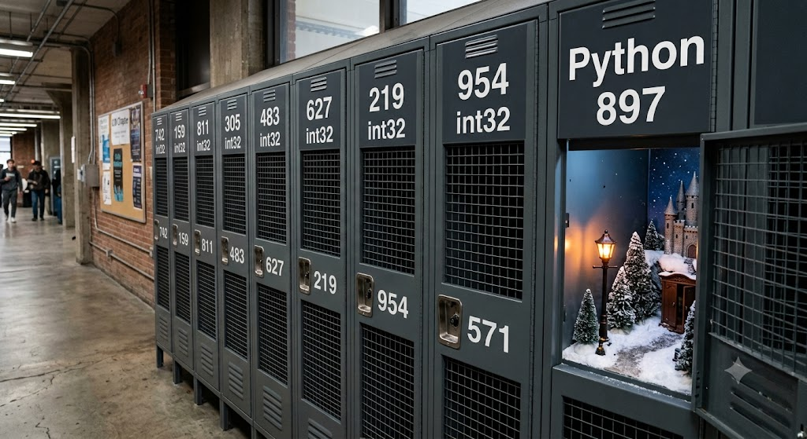
Image: another Nano Banana hallucination
Why “Python is slow”
- Every value is an object on the heap — even
1(a Cintis 4 bytes; a Pythonintis 28) - Everything is mutable, so the interpreter can assume nothing, so cannot optimise anything ahead of time
- Types are checked at runtime, on every operation, every time
- A list is an array of pointers to scattered objects, no cache locality
…so why does everyone use it?
- Clean syntax: executable pseudocode, optimised for reading
- Hides complexity: memory management, types, compilation, linking, installation
- The ecosystem: “batteries included” standard library, plus a mature external library for almost anything (PyPI)
- Offloading: NumPy, PyTorch & friends are compiled C/C++/Fortran underneath
- Economics: researcher time usually costs more than CPU time
Higher-level structures: the dictionary
In C, you build it yourself:
In Fortran: no dictionary in the standard library at all.
Dicts speak JSON
A Python dict…
- JSON is just dicts, lists, numbers, strings and booleans — the lingua franca of data exchange
- Generic formats outlive any one program, language, or PhD: this file is readable from Python, R, Julia, C++, a browser, a database — today and in twenty years
- Your instrument’s proprietary binary format is none of those things
- Rule of thumb: keep open, generic formats (JSON, CSV, HDF5, …) at the boundaries of everything you write
The Python types you’ll actually use
| Type | Literal | Notes |
|---|---|---|
bool |
True, False |
|
int |
42 |
arbitrary precision — no overflow! |
float |
6.626e-34 |
an IEEE double underneath |
str |
"NaCl" |
Unicode text |
list |
[1, 2, 3] |
mutable sequence |
tuple |
(x, y) |
immutable sequence |
dict |
{"H": 1.008} |
key → value |
set |
{2, 3, 5} |
uniqueness & membership |
None |
None |
“nothing to see here” |
class |
class Atom: ... |
user-defined objects |
Example: Periodic Table, four ways
- How about a list?
Loopable, and lookup works — but one fact per element, hidden in its position
Example: Periodic Table, four ways
- A custom
class
Control flow in Python
Loops (for, while), conditionals (if, elif, else) and functions build programs
Control flow in Python
Loops (for, while), conditionals (if, elif, else) and functions build programs
Control flow in Python
Loops (for, while), conditionals (if, elif, else) and functions build programs
Control flow in Python
Loops (for, while), conditionals (if, elif, else) and functions build programs
ptable = {
"H": Element("H", 1, 1.008, "hydrogen"),
"He": Element("He", 2, 4.003, "helium"),
...
}
def is_lanthanide(symbol):
"""Is the element a lanthanide?"""
if symbol in ptable and 57 <= ptable[symbol].Z <= 71:
return True
def get_lanthanides():
"""Return a list of all lanthanides"""
lanthanides = []
for symbol in ptable:
if is_lanthanide(symbol):
lanthanides.append(ptable[symbol])
return lanthanides- Indentation is the syntax — blocks are visual
- Express logical combinations with operators
and,or,not - Conditionals are expressions that can be chained (
if,elif,else) foriterates over any container (lists, dicts, files, …)
Control flow in Python
Loops (for, while), conditionals (if, elif, else) and functions build programs
ptable = {
"H": Element("H", 1, 1.008, "hydrogen"),
"He": Element("He", 2, 4.003, "helium"),
...
}
def is_lanthanide(symbol):
"""Is the element a lanthanide?"""
if symbol in ptable and 57 <= ptable[symbol].Z <= 71:
return True
def get_lanthanides():
"""Return a list of all lanthanides"""
lanthanides = []
for symbol in ptable:
if is_lanthanide(symbol):
lanthanides.append(ptable[symbol])
return lanthanides
la_mass_sum = sum(e.mass for e in get_lanthanides())Scientific Python
Nearly all of it stands on one shared abstraction: the NumPy array.
- NumPy — the n-dimensional array: memory laid out like Fortran, driven from Python
- SciPy — the numerical toolbox: integration, optimisation, linear algebra, statistics, signal processing
- matplotlib — plotting (most of the figures in most of the papers you’ll read)
- pandas — labelled tables (“dataframes”) for messy real-world data
- Jupyter — notebooks: code, figures and narrative in one document
- scikit-learn — classical machine learning; PyTorch / JAX at the deep-learning end
- …and domain layers on top: astropy (astronomy), ASE / pymatgen (materials), RDKit (molecules), Biopython, MDAnalysis, …
NumPy: putting the speed back
Remember why arrays are fast — one contiguous block. NumPy brings that to Python:
One line of Python = one compiled loop over the whole block
Optional final demo: Mandelbrot
The Mandelbrot set
Iterate one very simple map:
\[z_{n+1} = z_n^2 + c, \qquad z_0 = 0\]
for a complex number \(c\) — i.e. a point in the plane.
- The set is every \(c\) for which \(z_n\) stays bounded forever
- We can’t iterate forever, but there’s an escape test: once \(|z_n| > 2\), the orbit is gone for good — so iterate each pixel’s \(c\) up to
max_itertimes and colour it by when it escaped - The boundary is a fractal: infinitely detailed, new structure at every zoom
- And it’s a perfect benchmark: millions of pixels × hundreds of iterations of pure arithmetic, nothing to hide behind
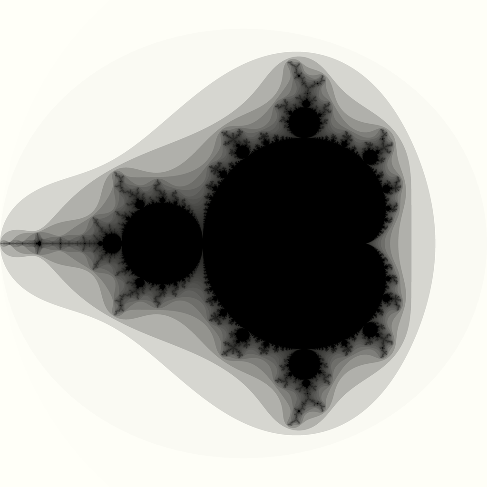
Demo: Mandelbrot
Pure Python:
NumPy (whole grid at once):
| Pure Python | NumPy | Numba | Fortran | |
|---|---|---|---|---|
| 1024², 100 iterations | 1.69 s | 0.3 s | 0.02 s | 0.01 s |
Wrap-up
Recap
- A century of hardware, one enduring idea: the stored program, fetch–decode–execute — everything else is miniaturisation
- Languages are abstractions over that machine: compiled ones (C, Fortran) stay close to it; Python trades machine time for your time
- Types are rules for reading bits — and every abstraction leaks (overflow,
0.1 + 0.2, “why is this slow?”) - Python hides the machinery in objects and dicts; when you need speed, offload to the compiled layer (NumPy) — or fix the algorithm first
Not covered
- Randomness: pseudo-random numbers, seeds, and why your “random” results should be reproducible
- Recursion: functions that call themselves
- Classes and object-oriented design — you’ll meet them the moment you use a library
- Parallelism: threads, processes, MPI, GPUs
- Exceptions and error handling
- Algorithmic complexity, properly (big-O beyond today’s hand-waving)
- Text encodings, regular expressions, databases, the network…
Software is a living ecosystem
- Everything you’ve seen today changes: languages, libraries, hardware — software grows organically around historical biases (x86’s baggage, Fortran’s arrays, Python’s dicts)
- You are part of the ecosystem: the code you write and the tools you choose feed back into it
- So the same code will not always work, everywhere, forever — unless you fence it in: pinned dependencies, recorded environments, containerisation
Next time: programming in practice
- Practical software development: git, GitHub, and collaborating on code
- Research software engineering: best practices — and the anti-patterns they replace
- Environments and packaging (uv), testing, documentation
- Some thoughts on AI code generation and agents: what changes, what doesn’t
Further reading
- Accelerate course (Cambridge): https://science.ai.cam.ac.uk/resources/python-programming-for-science
- Part II Computational Physics (Cambridge): https://computational-physics.tripos.org/
- CS50 Introduction to Computer Science and CS50P Python (Harvard): https://cs50.harvard.edu/python/
- Official Python tutorial (not for beginners): https://docs.python.org/3/tutorial/
- From Python to NumPy: https://www.labri.fr/perso/nrougier/from-python-to-numpy/
Research Computing with Python